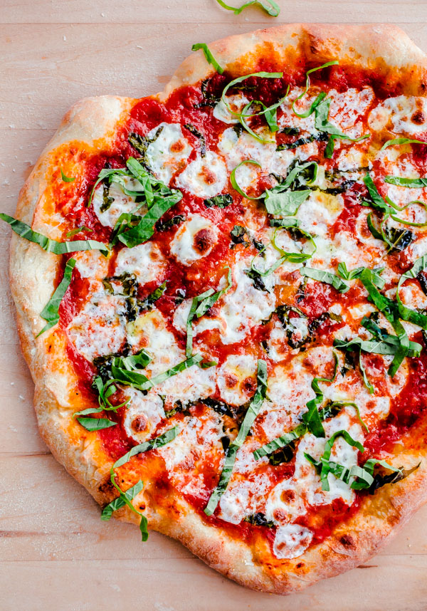

Margherita Recipe

Description
For the best margherita pizza, you will want to preheat your oven to the highest temperature possible. For my oven, that is 550 degrees Fahrenheit. I allow my baking steel to preheat for at least 30 minutes (regardless of whether my oven is ready as it takes time for your baking stone to come to temperature). The higher the temperature the better.
Ingredients Pizza Dough
- 300 gr all-purpose flower>
- 1 teaspoon granulated sugar
- ½ teaspoon active dry yeast
- ¾ teaspoon Diamond Crystal kosher salt
- 7 ounces (105°F to 115°F) warm water
- 1 tablespoon extra virgin olive oil
- semolina and all-purpose flour for dusting the pizza peel
Ingredients Pizza Sauce
- 1 cup pureed or crushed canned San Marzano tomatoes
- 2-3 fresh garlic cloves
- 1 teaspoon extra virgin olive oil
- 2-3 large pinches of kosher salt
- ¼ teaspoon freshly ground black pepper
Steps
- Prepare Pizza Dough: In a medium bowl, whisk together the all-purpose flour, sugar, yeast and salt. Add the warm water and olive oil, and stir the mixture with a wooden spoon until the dough just begins to come together. It will seem shaggy and dry, but don’t worry.
- Scrape the dough onto a well-floured counter top and knead the dough for three minutes. It should quickly come together and begin to get sticky. Dust the dough with flour as needed (sometimes I will have to do this 2 to 3 times, depending on humidity levels) – it should be slightly tacky, but should not be sticking to your counter top. After about 3 minutes, the dough should be smooth, slightly elastic, and tacky. Lightly grease a large mixing bowl with olive oil, and place the dough into the bowl.
- Cover the bowl with a kitchen towel (or plastic wrap) and allow the dough to rise in a warm, dry area of your kitchen for 2 hours or until the dough has doubled in size. Proofing Tip: If your kitchen is very cold, heat a large heatproof measuring cup of water in the microwave for 2 to 3 minutes. This creates a nice warm environment. Remove the cup and place the bowl with the dough in the microwave until it has risen. [If you are preparing the dough in advance, see the note section for freezing instructions.
- Preheat Oven and Pizza Steel or Stone: Place the pizza steel (or stone) on the second to top rack of your oven (roughly 8 inches from the broiler element), and preheat the oven and steel (or stone) to 550°F (285°C) for a minumum of 1 hour. If your oven does not go up to 550°F (285°C) or you are using a delicate pizza stone, I recommend heating it to a maximum of 500°F (260°C)
- As the oven is preheating, assemble the ingredients. In a small bowl, stir together the pureed tomatoes, minced garlic, extra virgin olive oil, pepper, and salt. Set aside another small bowl with the cubed mozzarella cheese (pat the cheese with a paper towel to remove any excess moisture). Set aside the basil leaves and grated parmigiano-reggiano cheese for easy grabbing.
- Separate the dough into two equal-sized portions. It will deflate slightly, but that is OK. Place the dough on a large plate or floured counter top, cover gently with plastic wrap, and allow the dough to rest for 5 to 10 minutes.
- Assemble the Pizza: Sprinkle the pizza peel (if you do not own a pizza peel, you can try using the back of a half sheet pan - but it is tricky!) with a tablespoon of semolina and dusting of all-purpose flour. Gently use both hands to stretch one ball of pizza dough into roughly a 10-inch circle (don’t worry if its not perfectly uniform). If the dough springs back or is too elastic, allow it to rest for an additional five minutes. The edges of the dough can be slightly thicker, but make sure the center of the dough is thin (you should be able to see some light through it if you held it up). Gently transfer the dough onto the semolina and flour dusted pizza peel or baking sheet.
- Drizzle or brush the dough lightly (using your fingertips) with olive oil (roughly a teaspoon. Using a large spoon, add roughly ½ cup of the tomato sauce onto the pizza dough, leaving a ½-inch or ¾-inch border on all sides. Use the back of the spoon to spread it evenly and thinly. Sprinkle a tablespoon of parmigiano-reggiano cheese onto the pizza sauce. Add half of the cubed mozzarella, distributing it evenly over the entire pizza. Using your hands, tear a few large basil leaves, and sprinkle the basil over the pizza. At this point, I’ll occasionally stretch the sides of the dough out a bit to make it even thinner. Gently slide the pizza from the peel onto the heated baking stone. Bake for 7 to 8 minutes, or until the crust is golden and the cheese is bubbling and caramelized and the edges of the pizza are golden brown. Note: If you're looking for more color, finish the pizza under the low or medium broil setting, but watch it carefully!
Remove the pizza carefully from the oven with the pizza peel, transfer to a wooden cutting board or foil, drizzle the top with olive oil, some grated parmigiano-reggiano cheese, and chiffonade of fresh basil. Slice and serve immediately and/or prepare the second pizza.
Back Home